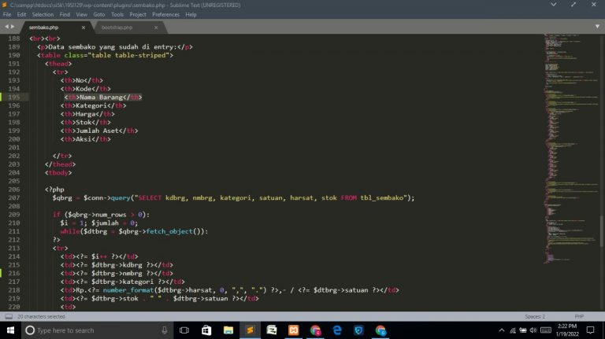
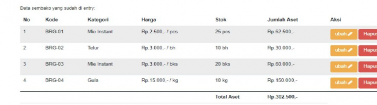
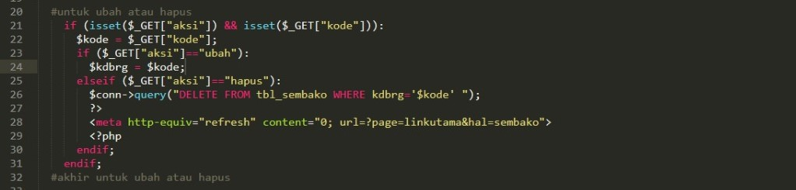
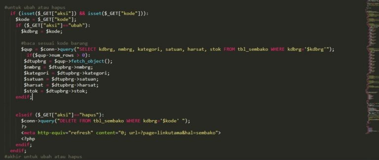
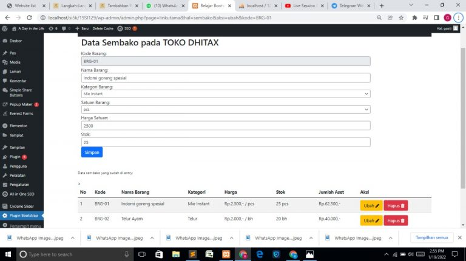
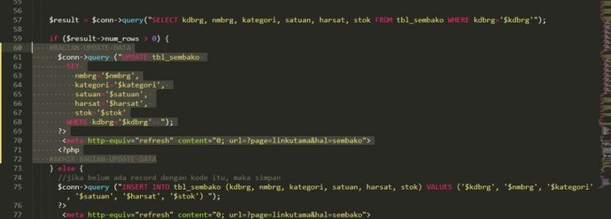
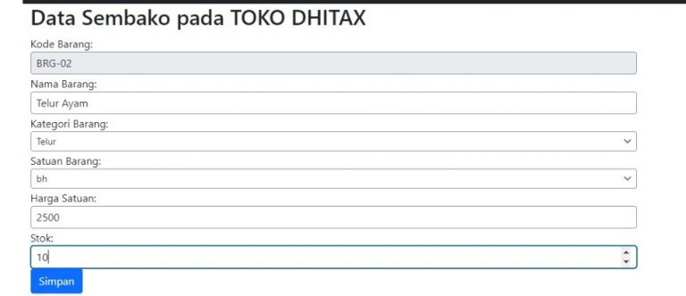

NIM: 1922500071
Nama: Tri Utami
Kelompok: SI5J
Hasil atau kesimpulan dari pertemuan 15 adalah:
- Yang akan kita lakukan yaitu menambahkan tabel nama yang ada pada plugin seperti yang ada di database phpmyadmin.Bukalah file sembako.php anda lalu tambahkan class & query “Nama Barang”
- Lalu anda akan membuat script pada aksi Ubah :
- Langka pertama yaitu tambahkan script $kdbrg = $kode; diantar script ubah dan hapus
- Selanjutnya yang harus dilakukan membuat script mencari/membaca data barang dengan kode yang muncul
script nya
- Lalu kita akan membuat script untuk menyimpan data yang telah kita ubah sebelumnya dan tertampil pada tabel data yang telah di entry
gambar:






